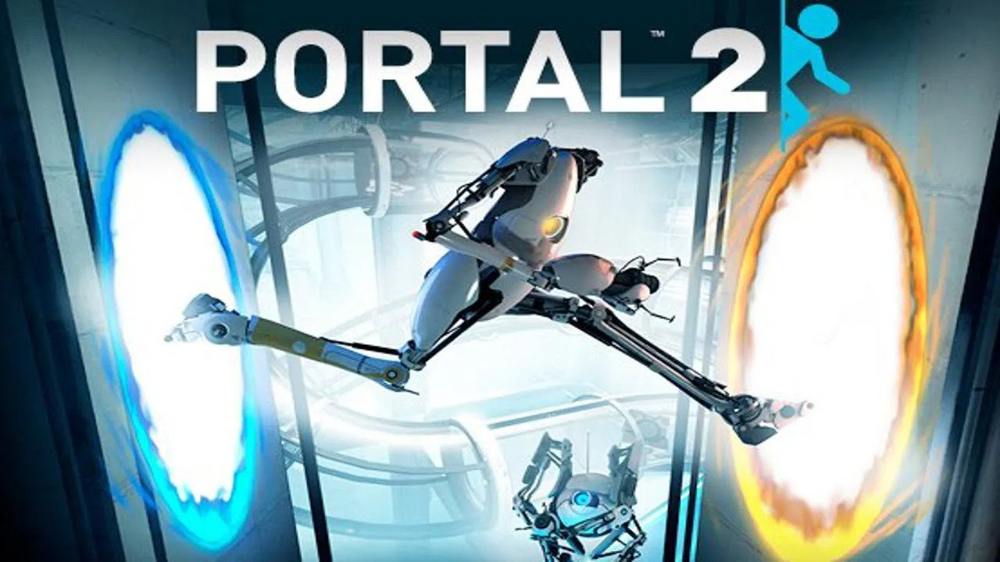

Топ 3 фильма 2011 года
-
"Начало" (Inception)

Режиссер: Кристофер Нолан
Описание: Доминик Кобб — специалист по извлечению информации, работающий в мире снов. Ему поручают сложную задачу не извлечь, а внедрить идею в сознание человека. Во время выполнения задания Кобб сталкивается с собственными демонами, которые угрожают его успеху. Фильм исследует темы разума, снов и реальности.
-
Социальная сеть

Режиссер: Дэвид Финчер
Описание: Фильм рассказывает историю создания Facebook и о становлении Марка Цукерберга, начиная от его студенческой жизни в Гарвардском университете до юридических битв с бывшими друзьями и партнерами. Это история о дружбе, предательстве и амбициях в эпоху интернета.
-
"Полночь в Париже"

Режиссер: Уди Аллен
Описание: Молодой писатель Гил Пендлтон путешествует в Париж со своей невестой. Он неожиданно начинает попутешествовать во времени, встречая известных деятелей искусства и литературы 1920-х годов. Фильм исследует ностальгию и ценность современных времен.
Популярные игры 2011 года
-
The Elder Scrolls V: Skyrim

Игра в жанре RPG, действие которой происходит в открытом мире. Игрок может исследовать обширные территории, выполнять квесты и развивать навыки своего персонажа.
-
Portal 2
Головоломка, где игрок использует порталы для прохождения уровней. Известна своим остроумным юмором и запутанными задачами.
-
Dark Souls

Известная своим высоким уровнем сложности, эта RPG предлагает игрокам исследовать мрачный мир и сражаться с могучими врагами.